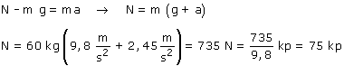

| Como la persona tiene aceleración hacia arriba,
N tendrá que ser mayor que mg

Si la báscula empuja a la persona hacia arriba con una fuerza
de 75 kp, la persona empujará a la báscula hacia abajo
con la misma fuerza de 75 kp. Es esta fuerza la que indicará
la báscula. |